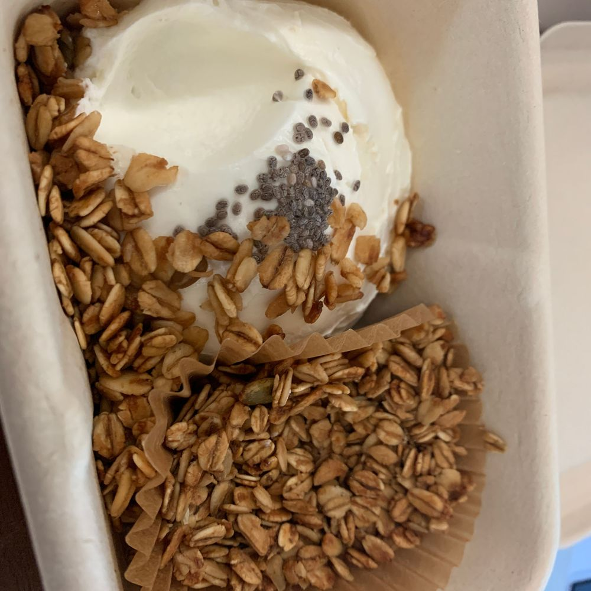

출근하기 전에 먹은 요거트!!
또 한입 먹고 찍어버렸다..ㅎㅎㅠㅠ
앞에 있으면 못 참겠어요🥺
앞에 두고 사진 먼저 찍는 게 너무 미안해..
당장 먹고 싶은 느낌..뭔지 알려나..?
그래서 자꾸 좀 먹고 안정을 취하고 나서 찍게 되네요..
그래도 오늘은 살짝 먹었죠?!(양심 없..)
그릭 요거트 특유의 쫀득한 식감이 너무 좋아요!
난 그릭요거트 좋아해서 꿀 없이도 잘 먹어요ㅎㅎ
그치만 꿀 한번 뿌리면 그날은 꿀과 함께해야해
어쩔 수 없으
콘서트 끝나고 치킨 먹고 어제 고기도 먹었어요ㅎㅎ
너무너무 행복했다아!!
그래서 오늘은 저녁에 계란까지만 먹고 끝내려구요..
오랜만에 운동하고 왔더니 기분이 좋네용
이호는 뭐하고 있어요?!